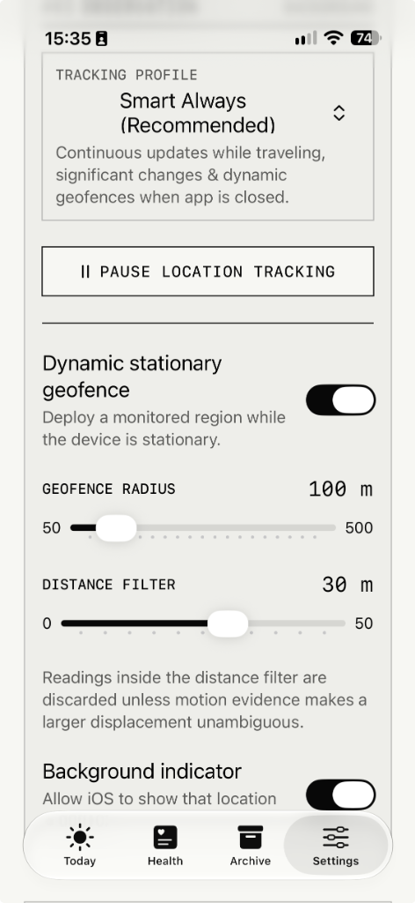

Technical Support
& Diagnostics.
Resolution procedures, configuration verification, and troubleshooting trees for Hermes Companion iOS and the Hermes skill on macOS, Linux, and Windows.
Hermes Companion supports dual synchronization modes: Apple iCloud Drive (zero relay servers) and Direct Connection (self-hosted HTTP daemon with pre-shared Bearer token authentication). There are zero third-party clouds or relays to experience outages.
5-Point Verification Checklist
Ensure each prerequisite is satisfied to enable autonomous background synchronization between iOS and your Mac.
iCloud~com~hermes~HermesCompanion which only synchronizes between devices sharing your account.
On macOS: System Settings → Apple Account → iCloud → iCloud Drive must also be enabled.
~/Library/Mobile Documents. When using Direct Connection, Hermes runs on any OS (Linux, Windows, WSL, Docker, macOS) via the built-in HTTP daemon (companion.py --serve).

Troubleshooting & FAQs
Detailed step-by-step diagnostic solutions for typical synchronization and execution situations.
This indicates that macOS has not yet materialized the iCloud container file locally, or permissions need verification. To resolve:
- Run
python3 ~/.hermes/skills/hermes-companion/scripts/companion.py --doctor(orpython3 skills/hermes-companion/scripts/companion.py --doctorfrom repo root) on your Mac to immediately inspect host OS, iCloud directory presence, and permissions. - Ensure you are running on native macOS (not inside a Docker container, WSL, or remote Linux host).
- Open the Hermes Companion app on your iPhone. The app automatically seeds the container on first launch so Apple's CloudDocs creates the Mac directory.
- Allow iCloud Drive 30–60 seconds to perform its initial container synchronization handshake with macOS.
No, this is by intentional design. Hermes Companion uses a write-on-change architecture:
Indoor GPS jitter (10–50 meters) is deliberately refused to prevent battery drain and artificial movement noise. Stationary readings are only recorded if displacement exceeds 150m or speed exceeds 1 m/s.
When you stay at the office or at home for 4 hours, the timestamp stays anchored at your arrival time. The Hermes agent calculates fix_age_minutes: 240 and correctly concludes: "You are still at the office."
Open your iPhone's native Settings app → scroll down to Privacy & Security → tap Location Services → tap Hermes Companion → select Always.
Also ensure Precise Location is toggled ON and Background App Refresh is enabled in Settings → General → Background App Refresh.
HealthKit delivers sleep records when you wake up and when your Apple Watch completes sleep stage classification. Note:
- Verify Apple Health permissions in iPhone Settings → Health → Data Access & Devices → Hermes Companion.
- Make sure Sleep Analysis and Workouts are toggled on.
- Health snapshots are written when Apple Health emits new samples or on background refresh, not on every GPS tick.
If you keep your container or places configuration in custom directories, configure Hermes via CLI:
hermes config set skills.config.hermes-companion.icloud_dir "$HOME/Library/Mobile Documents/iCloud~com~hermes~HermesCompanion/Documents" hermes config set skills.config.hermes-companion.places_file "$HOME/places.json"
Hermes Companion supports asynchronous, thread-safe letter exchange directly through iCloud Drive under threads/. You can compose letters in the iOS app under Hermes Post, and your agent reads and replies to them.
To have Hermes automatically monitor for incoming letters and compose replies in the background, install the native macOS LaunchAgent:
# Install and start the resident background daemon: python3 ~/.hermes/skills/hermes-companion/scripts/companion.py --install-service # Check background daemon launchd status: python3 ~/.hermes/skills/hermes-companion/scripts/companion.py --service-status
You can manage named locations directly from the iOS app's Places tab, or using the CLI on macOS:
- In-App: Tap the Places tab on iPhone. Tap + Add Place, enter a label (e.g. "Fitness First Cannstatt"), assign a category (
gym,work,home), and tap Use Current Fix or enter coordinates. Adjust the geofence perimeter slider (50m to 500m). - Via CLI: Run
python3 ~/.hermes/skills/hermes-companion/scripts/companion.py --add --name "Gym" --category gym --lat 48.80196 --lon 9.22026 --radius 150. - Places sync automatically into your private iCloud container (
Documents/places.json) and merge seamlessly between devices.
This is by intentional architectural design. Phone battery percentage and speed are neither tracked, recorded in JSON, nor reported to your AI agent.
Omitting battery and fine-grained velocity eliminates constant sensor polling and prevents fingerprinting. Your agent only needs qualitative motion classification (stationary, walking, running, cycling, automotive) and arrival context to understand your day.
No. This is the primary architectural differentiator of Hermes Companion compared to other apps.
Other companion or self-hosted agent tools require persistent VPN profiles on iOS (Tailscale, WireGuard), open router ports, or third-party reverse tunnels (Cloudflare, ngrok). Those tunnels prevent the iPhone from deep sleeping, drain battery rapidly in your pocket, drop sockets when switching between Wi-Fi and 5G cellular, and create firewall headaches.
With Apple iCloud mode, Hermes Companion requires zero tunnels, zero VPNs, and zero open ports. The iOS app writes files to its local flash sandbox, and Apple's native CloudDocs system synchronizes them to your Mac via your personal Apple ID. With Direct Connection mode, the phone talks directly to your host over local LAN or standard HTTPS reverse proxy with zero persistent tunnels required.
Direct Connection allows you to run Hermes on Linux, Windows, WSL, Docker, or macOS without relying on Apple iCloud:
- Zero-Friction Chat Pairing: Simply tell your agent in chat (Telegram, Discord, Web): "Connect my iPhone" (or "pair the companion app"). The agent generates a pairing QR code in one turn and replies with the image.
- Terminal Pairing Command: Run
python3 ~/.hermes/skills/hermes-companion/scripts/companion.py --pair --qr-file /tmp/hermes-companion-pair.png(add--endpoint https://<public-host>if using a reverse proxy). - Scan in App: In Hermes Companion, navigate to Settings → Sync Provider → Direct Connection → Scan Pairing QR Code and point your camera at the screen. The host URL and secure Keychain Bearer token configure automatically.
- Start Host Daemon: Run
python3 ~/.hermes/skills/hermes-companion/scripts/companion.py --serve --port 8787on your host machine. Telemetry and Post letters sync to~/.hermes/hermes-companion/data/.
Interactive Terminal Diagnostics
Select a diagnostic test below to inspect the expected command line output for each stage of the synchronization pipeline.
$ python3 ~/.hermes/skills/hermes-companion/scripts/companion.py --doctor
Hermes Companion Pre-Flight Diagnostics: ============================================================ [PASS] Operating System macOS (native host) [PASS] iCloud Drive Active at ~/Library/Mobile Documents [PASS] Privacy Permissions Files and Folders access verified. [PASS] App Container Found at iCloud~com~hermes~HermesCompanion (write access: yes) [INFO] Container Files Synced files: location, health, threads, places [PASS] Hermes CLI Executable located at ~/.local/bin/hermes [PASS] Background Service LaunchAgent 'ai.hermes.companion-inbox' is active. ============================================================ Diagnostic summary: All critical checks passed.
Developer Contact & Issue Submission
Encountered an edge case or need technical guidance? Reach out through GitHub or submit your diagnostic report.
For bugs, feature enhancements, or contributing to the Swift codebase and Hermes skill, GitHub Issues is our primary tracking system.
For App Store support inquiries, private security feedback, or direct assistance: